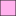

<!doctype html>
<html lang="en">
    <head>
        <meta charset="utf-8">
        <meta http-equiv="X-UA-Compatible" content="IE=edge">
        <meta name="viewport" content="initial-scale=1,user-scalable=no,maximum-scale=1,width=device-width">
        <meta name="mobile-web-app-capable" content="yes">
        <meta name="apple-mobile-web-app-capable" content="yes">
        <link rel="stylesheet" href="css/leaflet.css">
        <link rel="stylesheet" href="css/L.Control.Layers.Tree.css">
        <link rel="stylesheet" href="css/qgis2web.css">
        <link rel="stylesheet" href="css/fontawesome-all.min.css">
        <link rel="stylesheet" href="css/leaflet-control-geocoder.Geocoder.css">
        <link rel="stylesheet" href="css/leaflet-measure.css">
        <style>
        html, body, #map {
            width: 100%;
            height: 100%;
            padding: 0;
            margin: 0;
        }
        </style>
        <title></title>
    </head>
    <body>
        <div id="map">
            
        </div>
        <script src="js/qgis2web_expressions.js"></script>
        <script src="js/leaflet.js"></script>
        <script src="js/L.Control.Layers.Tree.min.js"></script>
        <script src="js/leaflet.rotatedMarker.js"></script>
        <script src="js/leaflet.pattern.js"></script>
        <script src="js/leaflet-hash.js"></script>
        <script src="js/Autolinker.min.js"></script>
        <script src="js/rbush.min.js"></script>
        <script src="js/labelgun.min.js"></script>
        <script src="js/labels.js"></script>
        <script src="js/leaflet-control-geocoder.Geocoder.js"></script>
        <script src="js/leaflet-measure.js"></script>
        <script src="data/Communes_2.js"></script>
        <script src="data/Sections_3.js"></script>
        <script src="data/parcellescadastre_4.js"></script>
        <script src="data/PROJET_5.js"></script>
        <script src="data/POSITION_6.js"></script>
        <script>
        var map = L.map('map', {
            zoomControl:false, maxZoom:28, minZoom:1
        }).fitBounds([[50.60062647905078,2.9967476912311417],[50.60136272834923,2.9990681019158547]]);
        var hash = new L.Hash(map);
        map.attributionControl.setPrefix('<a href="https://github.com/tomchadwin/qgis2web" target="_blank">qgis2web</a> &middot; <a href="https://leafletjs.com" title="A JS library for interactive maps">Leaflet</a> &middot; <a href="https://qgis.org">QGIS</a>');
        var autolinker = new Autolinker({truncate: {length: 30, location: 'smart'}});
        // remove popup's row if "visible-with-data"
        function removeEmptyRowsFromPopupContent(content, feature) {
         var tempDiv = document.createElement('div');
         tempDiv.innerHTML = content;
         var rows = tempDiv.querySelectorAll('tr');
         for (var i = 0; i < rows.length; i++) {
             var td = rows[i].querySelector('td.visible-with-data');
             var key = td ? td.id : '';
             if (td && td.classList.contains('visible-with-data') && feature.properties[key] == null) {
                 rows[i].parentNode.removeChild(rows[i]);
             }
         }
         return tempDiv.innerHTML;
        }
                       /*-======================================================================================================================================================
                                                                      LOGO
====================================================================================================================================================================*/

L.Control.Watermark = L.Control.extend({
		onAdd(map) {
			const img = L.DomUtil.create('img');

			img.src = './images/logo.png';
			img.style.width = '80px';
			return img;
		},

		onRemove(map) {
			// Nothing to do here
		}
	});

	L.control.watermark = function (opts) {
		return new L.Control.Watermark(opts);
	};
	
	const watermarkControl = L.control.watermark({position: 'topright'}).addTo(map);
   
   


/*----------------------------------------------------------------------------------------------------------
                                 fin logo
------------------------------------------------------------------------------------------------------------*/
        // add class to format popup if it contains media
		function addClassToPopupIfMedia(content, popup) {
			var tempDiv = document.createElement('div');
			tempDiv.innerHTML = content;
			if (tempDiv.querySelector('td img')) {
				popup._contentNode.classList.add('media');
					// Delay to force the redraw
					setTimeout(function() {
						popup.update();
					}, 10);
			} else {
				popup._contentNode.classList.remove('media');
			}
		}
        var zoomControl = L.control.zoom({
            position: 'topleft'
        }).addTo(map);
        var measureControl = new L.Control.Measure({
            position: 'topleft',
            primaryLengthUnit: 'meters',
            secondaryLengthUnit: 'kilometers',
            primaryAreaUnit: 'sqmeters',
            secondaryAreaUnit: 'hectares'
        });
        measureControl.addTo(map);
        document.getElementsByClassName('leaflet-control-measure-toggle')[0].innerHTML = '';
        document.getElementsByClassName('leaflet-control-measure-toggle')[0].className += ' fas fa-ruler';
        var bounds_group = new L.featureGroup([]);
        function setBounds() {
        }
        map.createPane('pane_GoogleSatellite_0');
        map.getPane('pane_GoogleSatellite_0').style.zIndex = 400;
        var layer_GoogleSatellite_0 = L.tileLayer('https://mt1.google.com/vt/lyrs=s&x={x}&y={y}&z={z}', {
            pane: 'pane_GoogleSatellite_0',
            opacity: 1.0,
            attribution: '<a href="https://www.google.at/permissions/geoguidelines/attr-guide.html">Map data ©2015 Google</a>',
            minZoom: 1,
            maxZoom: 28,
            minNativeZoom: 0,
            maxNativeZoom: 20
        });
        layer_GoogleSatellite_0;
        map.createPane('pane_OpenStreetMap_1');
        map.getPane('pane_OpenStreetMap_1').style.zIndex = 401;
        var layer_OpenStreetMap_1 = L.tileLayer('https://tile.openstreetmap.org/{z}/{x}/{y}.png', {
            pane: 'pane_OpenStreetMap_1',
            opacity: 1.0,
            attribution: '',
            minZoom: 1,
            maxZoom: 28,
            minNativeZoom: 0,
            maxNativeZoom: 19
        });
        layer_OpenStreetMap_1;
        map.addLayer(layer_OpenStreetMap_1);
        function pop_Communes_2(feature, layer) {
            var popupContent = '<table>\
                    <tr>\
                        <td colspan="2">' + (feature.properties['geo_commune'] !== null ? autolinker.link(feature.properties['geo_commune'].toLocaleString()) : '') + '</td>\
                    </tr>\
                    <tr>\
                        <td colspan="2">' + (feature.properties['annee'] !== null ? autolinker.link(feature.properties['annee'].toLocaleString()) : '') + '</td>\
                    </tr>\
                    <tr>\
                        <td colspan="2">' + (feature.properties['object_rid'] !== null ? autolinker.link(feature.properties['object_rid'].toLocaleString()) : '') + '</td>\
                    </tr>\
                    <tr>\
                        <td colspan="2">' + (feature.properties['idu'] !== null ? autolinker.link(feature.properties['idu'].toLocaleString()) : '') + '</td>\
                    </tr>\
                    <tr>\
                        <td colspan="2">' + (feature.properties['tex2'] !== null ? autolinker.link(feature.properties['tex2'].toLocaleString()) : '') + '</td>\
                    </tr>\
                    <tr>\
                        <td colspan="2">' + (feature.properties['creat_date'] !== null ? autolinker.link(feature.properties['creat_date'].toLocaleString()) : '') + '</td>\
                    </tr>\
                    <tr>\
                        <td colspan="2">' + (feature.properties['update_dat'] !== null ? autolinker.link(feature.properties['update_dat'].toLocaleString()) : '') + '</td>\
                    </tr>\
                    <tr>\
                        <td colspan="2">' + (feature.properties['commune'] !== null ? autolinker.link(feature.properties['commune'].toLocaleString()) : '') + '</td>\
                    </tr>\
                    <tr>\
                        <td colspan="2">' + (feature.properties['lot'] !== null ? autolinker.link(feature.properties['lot'].toLocaleString()) : '') + '</td>\
                    </tr>\
                    <tr>\
                        <td colspan="2">' + (feature.properties['ogc_fid'] !== null ? autolinker.link(feature.properties['ogc_fid'].toLocaleString()) : '') + '</td>\
                    </tr>\
                </table>';
            var content = removeEmptyRowsFromPopupContent(popupContent, feature);
			layer.on('popupopen', function(e) {
				addClassToPopupIfMedia(content, e.popup);
			});
			layer.bindPopup(content, { maxHeight: 400 });
        }

        function style_Communes_2_0() {
            return {
                pane: 'pane_Communes_2',
                opacity: 1,
                color: 'rgba(255,170,0,1.0)',
                dashArray: '',
                lineCap: 'butt',
                lineJoin: 'miter',
                weight: 5.0, 
                fillOpacity: 0,
                interactive: true,
            }
        }
        map.createPane('pane_Communes_2');
        map.getPane('pane_Communes_2').style.zIndex = 402;
        map.getPane('pane_Communes_2').style['mix-blend-mode'] = 'normal';
        var layer_Communes_2 = new L.geoJson(json_Communes_2, {
            attribution: '',
            interactive: true,
            dataVar: 'json_Communes_2',
            layerName: 'layer_Communes_2',
            pane: 'pane_Communes_2',
            onEachFeature: pop_Communes_2,
            style: style_Communes_2_0,
        });
        bounds_group.addLayer(layer_Communes_2);
        map.addLayer(layer_Communes_2);
        function pop_Sections_3(feature, layer) {
            var popupContent = '<table>\
                    <tr>\
                        <td colspan="2">' + (feature.properties['geo_section'] !== null ? autolinker.link(feature.properties['geo_section'].toLocaleString()) : '') + '</td>\
                    </tr>\
                    <tr>\
                        <td colspan="2">' + (feature.properties['annee'] !== null ? autolinker.link(feature.properties['annee'].toLocaleString()) : '') + '</td>\
                    </tr>\
                    <tr>\
                        <td colspan="2">' + (feature.properties['object_rid'] !== null ? autolinker.link(feature.properties['object_rid'].toLocaleString()) : '') + '</td>\
                    </tr>\
                    <tr>\
                        <td colspan="2">' + (feature.properties['idu'] !== null ? autolinker.link(feature.properties['idu'].toLocaleString()) : '') + '</td>\
                    </tr>\
                    <tr>\
                        <td colspan="2">' + (feature.properties['tex'] !== null ? autolinker.link(feature.properties['tex'].toLocaleString()) : '') + '</td>\
                    </tr>\
                    <tr>\
                        <td colspan="2">' + (feature.properties['geo_commune'] !== null ? autolinker.link(feature.properties['geo_commune'].toLocaleString()) : '') + '</td>\
                    </tr>\
                    <tr>\
                        <td colspan="2">' + (feature.properties['creat_date'] !== null ? autolinker.link(feature.properties['creat_date'].toLocaleString()) : '') + '</td>\
                    </tr>\
                    <tr>\
                        <td colspan="2">' + (feature.properties['update_dat'] !== null ? autolinker.link(feature.properties['update_dat'].toLocaleString()) : '') + '</td>\
                    </tr>\
                    <tr>\
                        <td colspan="2">' + (feature.properties['lot'] !== null ? autolinker.link(feature.properties['lot'].toLocaleString()) : '') + '</td>\
                    </tr>\
                    <tr>\
                        <td colspan="2">' + (feature.properties['ogc_fid'] !== null ? autolinker.link(feature.properties['ogc_fid'].toLocaleString()) : '') + '</td>\
                    </tr>\
                </table>';
            var content = removeEmptyRowsFromPopupContent(popupContent, feature);
			layer.on('popupopen', function(e) {
				addClassToPopupIfMedia(content, e.popup);
			});
			layer.bindPopup(content, { maxHeight: 400 });
        }

        function style_Sections_3_0() {
            return {
                pane: 'pane_Sections_3',
                opacity: 1,
                color: 'rgba(149,95,64,1.0)',
                dashArray: '',
                lineCap: 'butt',
                lineJoin: 'miter',
                weight: 3.0, 
                fillOpacity: 0,
                interactive: true,
            }
        }
        map.createPane('pane_Sections_3');
        map.getPane('pane_Sections_3').style.zIndex = 403;
        map.getPane('pane_Sections_3').style['mix-blend-mode'] = 'normal';
        var layer_Sections_3 = new L.geoJson(json_Sections_3, {
            attribution: '',
            interactive: true,
            dataVar: 'json_Sections_3',
            layerName: 'layer_Sections_3',
            pane: 'pane_Sections_3',
            onEachFeature: pop_Sections_3,
            style: style_Sections_3_0,
        });
        bounds_group.addLayer(layer_Sections_3);
        map.addLayer(layer_Sections_3);
        function pop_parcellescadastre_4(feature, layer) {
            var popupContent = '<table>\
                    <tr>\
                        <th scope="row">Identifiant unique</th>\
                        <td>' + (feature.properties['geo_parcelle'] !== null ? autolinker.link(feature.properties['geo_parcelle'].toLocaleString()) : '') + '</td>\
                    </tr>\
                    <tr>\
                        <th scope="row">Etiquette</th>\
                        <td>' + (feature.properties['tex'] !== null ? autolinker.link(feature.properties['tex'].toLocaleString()) : '') + '</td>\
                    </tr>\
                    <tr>\
                        <th scope="row">Section</th>\
                        <td>' + (feature.properties['geo_section'] !== null ? autolinker.link(feature.properties['geo_section'].toLocaleString()) : '') + '</td>\
                    </tr>\
                    <tr>\
                        <th scope="row">Commune</th>\
                        <td>' + (feature.properties['nomcommune'] !== null ? autolinker.link(feature.properties['nomcommune'].toLocaleString()) : '') + '</td>\
                    </tr>\
                    <tr>\
                        <th scope="row">Surface m2</th>\
                        <td>' + (feature.properties['surface_geo'] !== null ? autolinker.link(feature.properties['surface_geo'].toLocaleString()) : '') + '</td>\
                    </tr>\
                </table>';
            var content = removeEmptyRowsFromPopupContent(popupContent, feature);
			layer.on('popupopen', function(e) {
				addClassToPopupIfMedia(content, e.popup);
			});
			layer.bindPopup(content, { maxHeight: 400 });
        }

        function style_parcellescadastre_4_0() {
            return {
                pane: 'pane_parcellescadastre_4',
                opacity: 1,
                color: 'rgba(35,35,35,1.0)',
                dashArray: '',
                lineCap: 'butt',
                lineJoin: 'miter',
                weight: 1.0, 
                fillOpacity: 0,
                interactive: true,
            }
        }
        map.createPane('pane_parcellescadastre_4');
        map.getPane('pane_parcellescadastre_4').style.zIndex = 404;
        map.getPane('pane_parcellescadastre_4').style['mix-blend-mode'] = 'normal';
        var layer_parcellescadastre_4 = new L.geoJson(json_parcellescadastre_4, {
            attribution: '',
            interactive: true,
            dataVar: 'json_parcellescadastre_4',
            layerName: 'layer_parcellescadastre_4',
            pane: 'pane_parcellescadastre_4',
            onEachFeature: pop_parcellescadastre_4,
            style: style_parcellescadastre_4_0,
        });
        bounds_group.addLayer(layer_parcellescadastre_4);
        map.addLayer(layer_parcellescadastre_4);
        function pop_PROJET_5(feature, layer) {
            var popupContent = '<table>\
                    <tr>\
                        <td colspan="2">' + (feature.properties['INFO'] !== null ? autolinker.link(feature.properties['INFO'].toLocaleString()) : '') + '</td>\
                    </tr>\
                    <tr>\
                        <td colspan="2">' + (feature.properties['PARCELLE CADASTRAL'] !== null ? autolinker.link(feature.properties['PARCELLE CADASTRAL'].toLocaleString()) : '') + '</td>\
                    </tr>\
                    <tr>\
                        <td colspan="2">' + (feature.properties['SURFACE'] !== null ? autolinker.link(feature.properties['SURFACE'].toLocaleString()) : '') + '</td>\
                    </tr>\
                </table>';
            var content = removeEmptyRowsFromPopupContent(popupContent, feature);
			layer.on('popupopen', function(e) {
				addClassToPopupIfMedia(content, e.popup);
			});
			layer.bindPopup(content, { maxHeight: 400 });
        }

        function style_PROJET_5_0() {
            return {
                pane: 'pane_PROJET_5',
                opacity: 1,
                color: 'rgba(35,35,35,1.0)',
                dashArray: '',
                lineCap: 'butt',
                lineJoin: 'miter',
                weight: 1.0, 
                fill: true,
                fillOpacity: 1,
                fillColor: 'rgba(255,0,197,0.3058823529411765)',
                interactive: true,
            }
        }
        map.createPane('pane_PROJET_5');
        map.getPane('pane_PROJET_5').style.zIndex = 405;
        map.getPane('pane_PROJET_5').style['mix-blend-mode'] = 'normal';
        var layer_PROJET_5 = new L.geoJson(json_PROJET_5, {
            attribution: '',
            interactive: true,
            dataVar: 'json_PROJET_5',
            layerName: 'layer_PROJET_5',
            pane: 'pane_PROJET_5',
            onEachFeature: pop_PROJET_5,
            style: style_PROJET_5_0,
        });
        bounds_group.addLayer(layer_PROJET_5);
        map.addLayer(layer_PROJET_5);
        function pop_POSITION_6(feature, layer) {
            var popupContent = '<table>\
                    <tr>\
                        <td colspan="2">' + (feature.properties['INFO'] !== null ? autolinker.link(feature.properties['INFO'].toLocaleString()) : '') + '</td>\
                    </tr>\
                </table>';
            var content = removeEmptyRowsFromPopupContent(popupContent, feature);
			layer.on('popupopen', function(e) {
				addClassToPopupIfMedia(content, e.popup);
			});
			layer.bindPopup(content, { maxHeight: 400 });
        }

        function style_POSITION_6_0() {
            return {
                pane: 'pane_POSITION_6',
        rotationAngle: 0.0,
        rotationOrigin: 'center center',
        icon: L.icon({
            iconUrl: 'markers/POSITION_6.svg',
            iconSize: [38.0, 38.0]
        }),
                interactive: true,
            }
        }
        map.createPane('pane_POSITION_6');
        map.getPane('pane_POSITION_6').style.zIndex = 406;
        map.getPane('pane_POSITION_6').style['mix-blend-mode'] = 'normal';
        var layer_POSITION_6 = new L.geoJson(json_POSITION_6, {
            attribution: '',
            interactive: true,
            dataVar: 'json_POSITION_6',
            layerName: 'layer_POSITION_6',
            pane: 'pane_POSITION_6',
            onEachFeature: pop_POSITION_6,
            pointToLayer: function (feature, latlng) {
                var context = {
                    feature: feature,
                    variables: {}
                };
                return L.marker(latlng, style_POSITION_6_0(feature));
            },
        });
        bounds_group.addLayer(layer_POSITION_6);
        map.addLayer(layer_POSITION_6);
        map.on("zoomend", function(e) {
            if (map.getZoom() <= 19 && map.getZoom() >= 10) {
                map.addLayer(layer_Sections_3);
            } else if (map.getZoom() > 19 || map.getZoom() < 10) {
                map.removeLayer(layer_Sections_3);
            }
        });
            if (map.getZoom() <= 19 && map.getZoom() >= 10) {
                map.addLayer(layer_Sections_3);
            } else if (map.getZoom() > 19 || map.getZoom() < 10) {
                map.removeLayer(layer_Sections_3);
            }
        var osmGeocoder = new L.Control.Geocoder({
            collapsed: true,
            position: 'topleft',
            text: 'Search',
            title: 'Testing'
        }).addTo(map);
        document.getElementsByClassName('leaflet-control-geocoder-icon')[0]
        .className += ' fa fa-search';
        document.getElementsByClassName('leaflet-control-geocoder-icon')[0]
        .title += 'Search for a place';
        var overlaysTree = [
        {label: '<b>Cadastre</b>', selectAllCheckbox: true, children: [
            {label: ' POSITION', layer: layer_POSITION_6},
            {label: ' PROJET', layer: layer_PROJET_5},
            {label: ' parcelles cadastre', layer: layer_parcellescadastre_4},
            {label: ' Sections', layer: layer_Sections_3},
            {label: ' Communes', layer: layer_Communes_2},]},
            {label: "OpenStreetMap", layer: layer_OpenStreetMap_1},
            {label: "Google Satellite", layer: layer_GoogleSatellite_0},]
        var lay = L.control.layers.tree(null, overlaysTree,{
            //namedToggle: true,
            //selectorBack: false,
            //closedSymbol: '&#8862; &#x1f5c0;',
            //openedSymbol: '&#8863; &#x1f5c1;',
            //collapseAll: 'Collapse all',
            //expandAll: 'Expand all',
            collapsed: false, 
        });
        lay.addTo(map);
		document.addEventListener("DOMContentLoaded", function() {
            // set new Layers List height which considers toggle icon
            function newLayersListHeight() {
                var layerScrollbarElement = document.querySelector('.leaflet-control-layers-scrollbar');
                if (layerScrollbarElement) {
                    var layersListElement = document.querySelector('.leaflet-control-layers-list');
                    var originalHeight = layersListElement.style.height 
                        || window.getComputedStyle(layersListElement).height;
                    var newHeight = parseFloat(originalHeight) - 50;
                    layersListElement.style.height = newHeight + 'px';
                }
            }
            var isLayersListExpanded = true;
            var controlLayersElement = document.querySelector('.leaflet-control-layers');
            var toggleLayerControl = document.querySelector('.leaflet-control-layers-toggle');
            // toggle Collapsed/Expanded and apply new Layers List height
            toggleLayerControl.addEventListener('click', function() {
                if (isLayersListExpanded) {
                    controlLayersElement.classList.remove('leaflet-control-layers-expanded');
                } else {
                    controlLayersElement.classList.add('leaflet-control-layers-expanded');
                }
                isLayersListExpanded = !isLayersListExpanded;
                newLayersListHeight()
            });	
			// apply new Layers List height if toggle layerstree
			if (controlLayersElement) {
				controlLayersElement.addEventListener('click', function(event) {
					var toggleLayerHeaderPointer = event.target.closest('.leaflet-layerstree-header-pointer span');
					if (toggleLayerHeaderPointer) {
						newLayersListHeight();
					}
				});
			}
            // Collapsed/Expanded at Start to apply new height
            setTimeout(function() {
                toggleLayerControl.click();
            }, 10);
            setTimeout(function() {
                toggleLayerControl.click();
            }, 10);
            // Collapsed touch/small screen
            var isSmallScreen = window.innerWidth < 650;
            if (isSmallScreen) {
                setTimeout(function() {
                    controlLayersElement.classList.remove('leaflet-control-layers-expanded');
                    isLayersListExpanded = !isLayersListExpanded;
                }, 500);
            }  
        });       
        map.on("zoomend", function(){

                if (map.hasLayer(layer_Communes_2)) {
                    if (map.getZoom() <= 12 && map.getZoom() >= 15) {
                        layer_Communes_2.eachLayer(function (layer) {
                            layer.openTooltip();
                        });
                    } else {
                        layer_Communes_2.eachLayer(function (layer) {
                            layer.closeTooltip();
                        });
                    }
                }
                if (map.hasLayer(layer_Sections_3)) {
                    if (map.getZoom() <= 13 && map.getZoom() >= 19) {
                        layer_Sections_3.eachLayer(function (layer) {
                            layer.openTooltip();
                        });
                    } else {
                        layer_Sections_3.eachLayer(function (layer) {
                            layer.closeTooltip();
                        });
                    }
                }
        });
        setBounds();
        var i = 0;
        layer_Communes_2.eachLayer(function(layer) {
            var context = {
                feature: layer.feature,
                variables: {}
            };
            layer.bindTooltip((layer.feature.properties['tex2'] !== null?String('<div style="color: #484848; font-size: 11pt; font-style: italic; font-family: \'Times New Roman\', sans-serif;">' + layer.feature.properties['tex2']) + '</div>':''), {permanent: true, offset: [-0, -16], className: 'css_Communes_2'});
            labels.push(layer);
            totalMarkers += 1;
              layer.added = true;
              addLabel(layer, i);
              i++;
        });
        var i = 0;
        layer_Sections_3.eachLayer(function(layer) {
            var context = {
                feature: layer.feature,
                variables: {}
            };
            layer.bindTooltip((layer.feature.properties['tex'] !== null?String('<div style="color: #955f40; font-size: 10pt; font-style: italic; font-family: \'Times New Roman\', sans-serif;">' + layer.feature.properties['tex']) + '</div>':''), {permanent: true, offset: [-0, -16], className: 'css_Sections_3'});
            labels.push(layer);
            totalMarkers += 1;
              layer.added = true;
              addLabel(layer, i);
              i++;
        });
                if (map.hasLayer(layer_Communes_2)) {
                    if (map.getZoom() <= 12 && map.getZoom() >= 15) {
                        layer_Communes_2.eachLayer(function (layer) {
                            layer.openTooltip();
                        });
                    } else {
                        layer_Communes_2.eachLayer(function (layer) {
                            layer.closeTooltip();
                        });
                    }
                }
                if (map.hasLayer(layer_Sections_3)) {
                    if (map.getZoom() <= 13 && map.getZoom() >= 19) {
                        layer_Sections_3.eachLayer(function (layer) {
                            layer.openTooltip();
                        });
                    } else {
                        layer_Sections_3.eachLayer(function (layer) {
                            layer.closeTooltip();
                        });
                    }
                }
        resetLabels([layer_Communes_2,layer_Sections_3,layer_parcellescadastre_4]);
        map.on("zoomend", function(){
            resetLabels([layer_Communes_2,layer_Sections_3,layer_parcellescadastre_4]);
        });
        map.on("layeradd", function(){
            resetLabels([layer_Communes_2,layer_Sections_3,layer_parcellescadastre_4]);
        });
        map.on("layerremove", function(){
            resetLabels([layer_Communes_2,layer_Sections_3,layer_parcellescadastre_4]);
        });


        /*---------------------------------------legende-----------------------------------------------------------------------------------------------------------------*/
 var infopanel = L.control({position: 'bottomleft'});
infopanel.onAdd = function (map) {
  var div = L.DomUtil.create('div', 'info');

  // ... existing HTML structure ...

  // Ajout d'un bouton et d'une section à masquer/afficher
  div.innerHTML += `
    <button id="toggleButton">Légende</button>
    <div id="hiddenSection" style="display: none;">
   

  
   </img>


       
    </div>
  `;

  return div;
};
infopanel.addTo(map);

// Écouteur d'événement sur le bouton
document.getElementById('toggleButton').addEventListener('click', function() {
  var hiddenSection = document.getElementById('hiddenSection');
  if (hiddenSection.style.display === 'none') {
    hiddenSection.style.display = 'block';
  } else {
    hiddenSection.style.display = 'none';
  }
});
/*-------------------------------------------------fin de legende-----------------------*/
        /*------------------------------------------------------------------------------------------------------------------
                                              Echelle cartographique
 -------------------------------------------------------------------------------------------------------------------*/ 
 L.control.scale().addTo(map);
        </script>
        
    </body>
</html>
